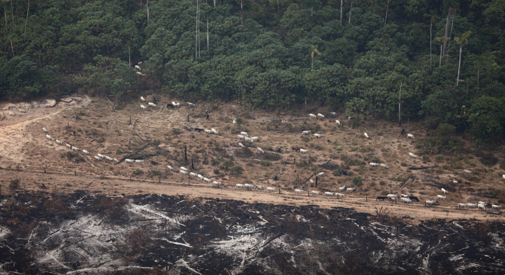
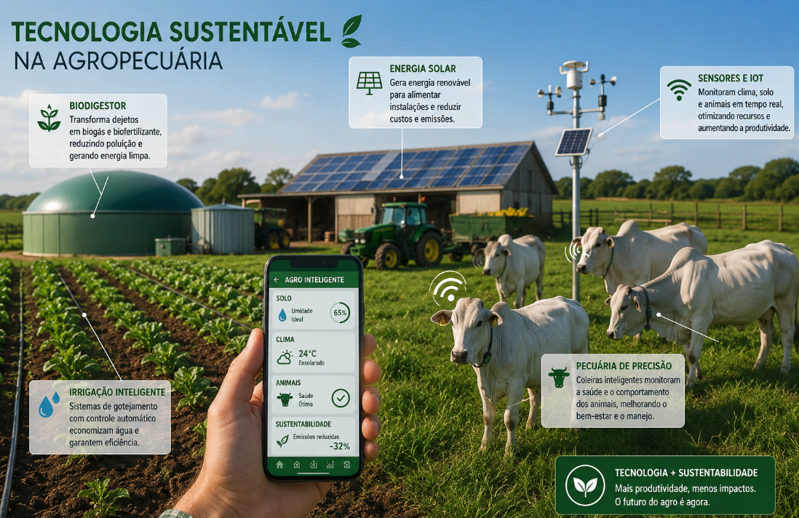
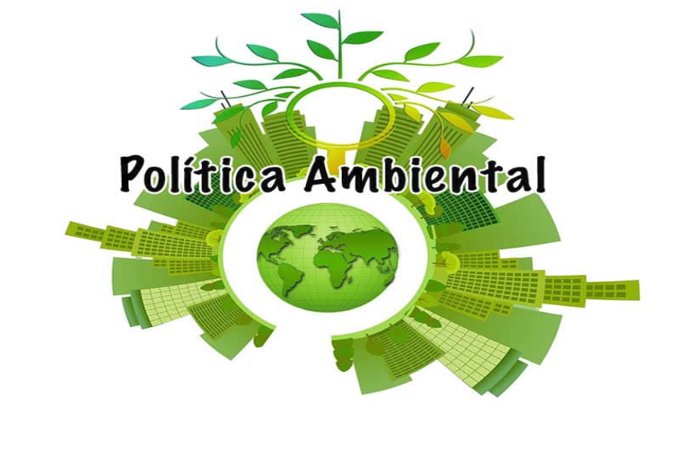
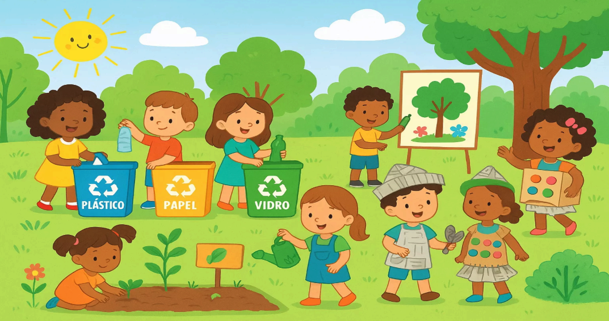
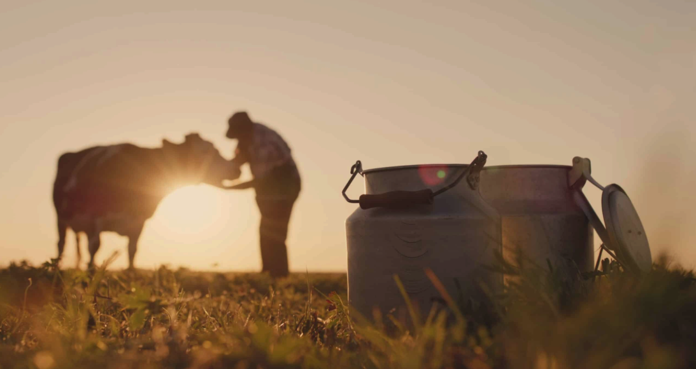

Solo degradado
Pastagens mal manejadas perdem fertilidade e produtividade em poucos anos.
Pecuária sustentável • Brasil
É possível conciliar uma pecuária produtiva e competitiva com a preservação das nossas florestas. Conheça o caminho para um campo mais verde.
01 — Diagnóstico
A pecuária possui enorme importância econômica para o Brasil, sendo responsável por milhões de empregos diretos e indiretos, além de representar uma das principais atividades do agronegócio nacional. O país possui um dos maiores rebanhos bovinos do mundo e ocupa posição de destaque na exportação de carne bovina. Apesar dessa relevância, a expansão desordenada das áreas de pastagem está diretamente ligada ao avanço do desmatamento, principalmente na Amazônia e no Cerrado.
Grande parte desse desmatamento ocorre porque muitas propriedades utilizam sistemas extensivos de baixa produtividade, em que uma grande área é necessária para manter poucos animais. Em diversas regiões, áreas florestais são queimadas para a formação de pastagens, causando degradação do solo, perda da biodiversidade e emissão de gases de efeito estufa.
O desmatamento ilegal também prejudica a imagem da pecuária brasileira no mercado internacional. Muitos países e empresas passaram a exigir produtos com origem sustentável, pressionando produtores e frigoríficos a adotarem práticas responsáveis. Reduzir o desmatamento deixou de ser apenas uma questão ambiental — é uma necessidade estratégica para a competitividade do setor.
Pastagens mal manejadas perdem fertilidade e produtividade em poucos anos.
O desmatamento reduz a umidade do ar e desorganiza o regime de chuvas.
Espécies da Amazônia e Cerrado perdem habitat a cada hectare aberto.

02 — Soluções
A modernização da pecuária é uma das principais soluções para diminuir a pressão sobre as florestas. Diversas tecnologias permitem produzir mais carne em áreas menores, evitando a abertura de novas pastagens.
Correção do solo, plantio de capins resistentes e manejo adequado devolvem produtividade a áreas degradadas — sem novos desmatamentos.
O gado é movimentado entre áreas para permitir a recuperação da vegetação, aumentando produtividade e reduzindo custos.
O confinamento e o semi-confinamento permitem maior produção em espaços reduzidos, diminuindo a necessidade de expansão territorial.
Combina árvores, agricultura e pecuária na mesma área. As árvores sequestram carbono, dão sombra ao gado e conservam solo e água — enquanto o produtor diversifica a renda.
Sensores, drones e imagens de satélite acompanham o solo, o manejo do gado e identificam áreas degradadas e ilegalmente desmatadas.
Suplementos alimentares desenvolvidos por pesquisas científicas reduzem a emissão de metano pelos bovinos.

03 — Governança
Governos, organizações ambientais e empresas passaram a atuar de forma mais intensa no combate ao desmatamento associado à pecuária. No Brasil, o Código Florestal estabelece regras sobre preservação ambiental dentro das propriedades rurais, incluindo áreas de preservação permanente e reservas legais.
Programas governamentais como o ABC+ oferecem linhas de crédito para produtores que investem em recuperação de pastagens, sistemas integrados e tecnologias sustentáveis, ajudando pequenos e médios produtores a modernizar suas propriedades.
Grandes frigoríficos adotam rastreabilidade para verificar a origem do gado e impedir a compra de animais vindos de áreas desmatadas ilegalmente. O monitoramento por satélite acompanha fazendas fornecedoras em tempo real.
Certificações ambientais ganharam importância no mercado internacional. Consumidores estão cada vez mais atentos à origem dos alimentos, e empresas comprometidas com sustentabilidade conquistam credibilidade e acesso a mercados mais exigentes na Europa e na América do Norte.

04 — Casos reais
Diversos projetos provam que é possível desenvolver a pecuária sem destruir florestas. Conheça exemplos que combinam produtividade e preservação.
Produtores que adotaram manejo intensivo sustentável dobraram a produtividade usando a mesma área de pastagem — mais carne, sem derrubar novas árvores.
Propriedades plantaram árvores em áreas improdutivas, recuperaram nascentes e adotaram sistemas integrados, restaurando o equilíbrio ambiental.
Fazendas mantêm faixas de vegetação que permitem a circulação de animais silvestres, preservando a biodiversidade local.
Cercamento de rios e nascentes evita contaminação pelo gado e garante maior proteção dos recursos hídricos.
Fazendas com Integração Lavoura-Pecuária-Floresta registraram aumento de produtividade, conforto térmico e redução de emissões de carbono.
Associações rurais promovem treinamentos e assistência técnica, acelerando a adoção de tecnologias mais eficientes e menos agressivas ao meio ambiente.

05 — Horizonte
A redução do desmatamento é essencial para garantir o futuro da própria pecuária. As mudanças climáticas já afetam diretamente a produção agropecuária por meio de secas prolongadas, aumento das temperaturas e irregularidade das chuvas. A preservação das florestas mantém o equilíbrio climático, protege os recursos hídricos e conserva a fertilidade do solo.
Além dos benefícios ambientais, a sustentabilidade fortalece a economia rural. Propriedades com práticas modernas apresentam maior produtividade, menor desperdício e melhores resultados financeiros. O mercado consumidor valoriza cada vez mais produtos responsáveis.
A sociedade tem papel essencial ao apoiar empresas comprometidas e cobrar ações contra o desmatamento ilegal. Reduzir o desmatamento não significa diminuir a produção, mas sim produzir de maneira mais eficiente, inteligente e sustentável — garantindo benefícios para as próximas gerações.

Interativo
Responda 7 perguntas rápidas sobre pecuária sustentável e descubra o quanto você sabe.
Pergunta 1 de 7
0 / 7
Galeria
Clique em uma imagem para ampliar.